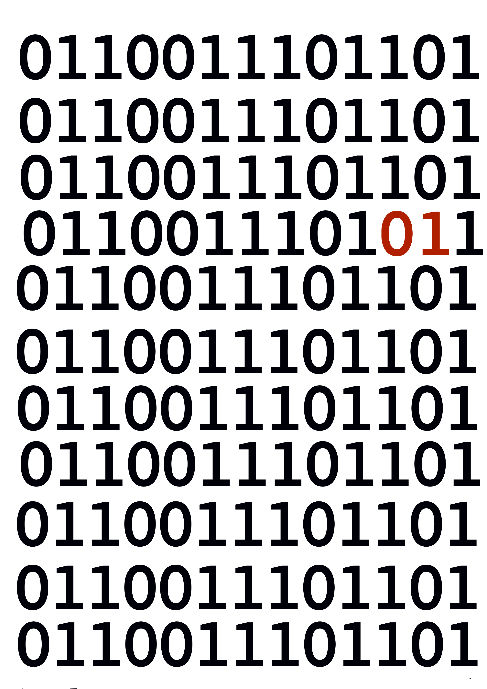
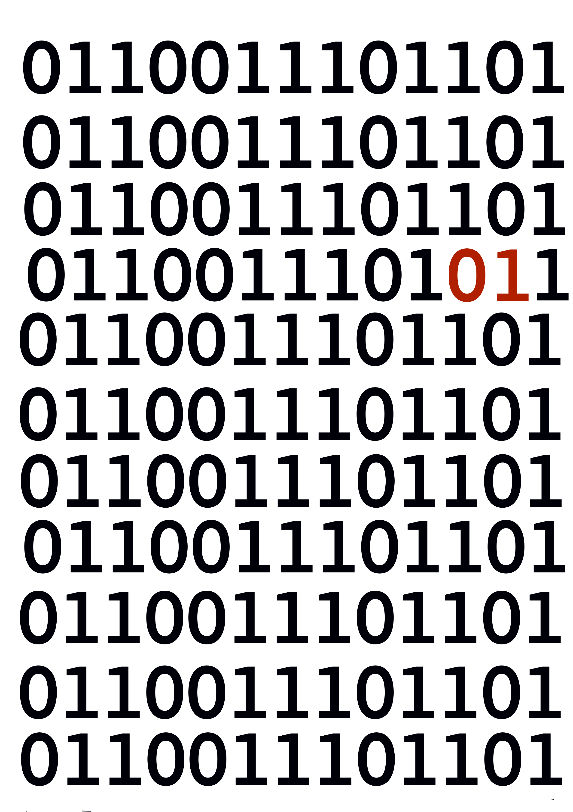

Bit Rotting - Click the 'Electronic File' :)
 

Digital fragility refers to how “unstable, unpredictable, and volatile”(Rubio and Wharton, 2020) digital media is. Within seconds, an entire document can be rendered unreadable due to bit rotting. A bit is a single binary digit, either a one or a zero. Bit rotting takes place when a bit is switched from a one to a zero or vice versa due to an electric switch. This switch will result in “broken data” which needs to be repaired continuously. As a result, “digital information needs to be maintained from the moment of its creation” (Wieringa, 2017).